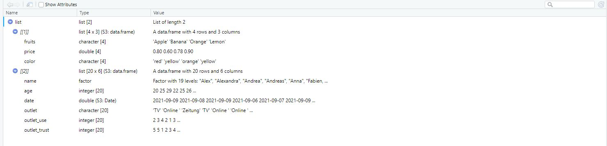

4 Tutorial: Objects & structures in R
After working through Tutorial 4, you’ll…
- know about types of data in R (numbers, text, factors, dates, logical/other operators)
- know about types of objects in R (scalars, vectors, matrices, data frames, lists)
4.1 Types of data
Objects in R can contain a variety of different types of data. We’ll get to know a selection of these, namely
To understand and work with these types of data, we’ll now import a data set. The data set is called “data_tutorial3.csv” via OLAT/Materials/02_02.03.22/Data.
The data set consists of data that is completely made up - a survey with 20 fictional students in a fictional seminar. We only use this data here so you can understand differences between types of data and types of objects.
The datafile data_tutorial3.csv is structured as follows:
- Each row contains the answer for a single student.
- Each column contains all values given by students for a single variable.
The variables included here are:
- name: the name of each student
- age: the age of each student (in years)
- date: the date on which each student was surveyed (in YYYY-MM-DD)
- outlet: the type of media outlet each student’s mainly uses to get information
- outlet_use: the time each student uses this media outlet daily (in hours)
- outlet_trust: how much each student trusts this media outlet (from 1 = not at all to 5 = very much)
We’ll read in the file with read.csv(). Here, we specify where to find the data file with the argument x as well as that the first row contains variable names with the argument header = TRUE2.
survey <- read.csv2("data_tutorial3.csv", header = TRUE)survey## X.2 X.1 X name age date outlet outlet_use outlet_trust
## 1 1 1 1 Alexandra 20 2021-09-09 TV 2 5
## 2 2 2 2 Alex 25 2021-09-08 Online 3 5
## 3 3 3 3 Maximilian 29 2021-09-09 Zeitung 4 1
## 4 4 4 4 Moritz 22 2021-09-06 TV 2 2
## 5 5 5 5 Vanessa 25 2021-09-07 Online 1 3
## 6 6 6 6 Andrea 26 2021-09-09 Online 3 4
## 7 7 7 7 Fabienne 26 2021-09-09 TV 3 2
## 8 8 8 8 Fabio 27 2021-09-09 Online 0 1
## 9 9 9 9 Magdalena 8 2021-09-08 Online 1 4
## 10 10 10 10 Tim 26 2021-09-07 TV NA 2
## 11 11 11 11 Alex 27 2021-09-09 Online NA 2
## 12 12 12 12 Tobias 26 2021-09-07 Online 2 2
## 13 13 13 13 Michael 25 2021-09-09 Online 3 2
## 14 14 14 14 Sabrina 27 2021-09-08 Online 1 2
## 15 15 15 15 Valentin 29 2021-09-09 TV 1 5
## 16 16 16 16 Tristan 26 2021-09-09 TV 2 5
## 17 17 17 17 Martin 21 2021-09-09 Online 1 2
## 18 18 18 18 Anna 23 2021-09-08 TV 3 3
## 19 19 19 19 Andreas 24 2021-09-09 TV 2 5
## 20 20 20 20 Florian 26 2021-09-09 Online 1 54.1.1 Accessing variables in data sets
Variables that are part of a data set – also called: data frame (we’ll come back to data frames a bit later in Data frames & matrices) – can be accessed by their name, but we need to specify the data set and the variable name and combine them with the access operator: $. This takes the form of:
dataframe$variablenameFor instance, we could retrieve the variable “name” in our survey data set by simply using its variable name: We specify the object we want to access, the data frame survey and then retrieve the column name via the operator $:
survey$name## [1] "Alexandra" "Alex" "Maximilian" "Moritz" "Vanessa"
## [6] "Andrea" "Fabienne" "Fabio" "Magdalena" "Tim"
## [11] "Alex" "Tobias" "Michael" "Sabrina" "Valentin"
## [16] "Tristan" "Martin" "Anna" "Andreas" "Florian"4.1.2 Numbers
A typical type of data you may come is numeric data. In our data set, the age of respondents is saved as numbers.
In R, this type of data is called numeric. To check if age is really saved as numbers, you can use mode(). The function tells you an object’s type.
mode(survey$age) ## [1] "numeric"4.1.3 Text
Letters and text is saved in the character format. In our data set, we know that the variable name is likely to contain textual content. We’ll check this with the same command mode():
#find out which type of data the object word consists of
mode(survey$name)## [1] "character"You may have already spotted something else: If you want to save something in character format, you have to set quotation marks ““ before and after the respective values. For instance, if you save the number 1 with quotation marks, R will use the character format:
word <- "1"
mode(word)## [1] "character"However, if you save the number 1 without quotation marks, R will use the numeric format:
word <- 1
mode(word)## [1] "numeric"Why is this important? In R, many functions for conducting statistical analyses, for example, can only be executed with objects containing numeric data, not character data.
For instance: Let’s say you want R to calculate the mean of some numbers:
numbers <- c("1", "8", "9", "4")
mean(numbers)## [1] NAR will throw you an error message. Why? Because you saved these numbers as character values, not as numeric values:
mode(numbers)## [1] "character"If we save these numbers in a numeric format, i.e., as numbers not text, the command works just fine:
numbers <- c(1,8,9,4)
mean(numbers)## [1] 5.54.1.4 Factors
Factors constitute an additional type of data. Factors can include both numeric data and characters. What is important, however, is that they treat any types of data as categorical.
We can, for instance, convert the variable name - which now contains each student’s name in character format - to a factor using as.factor():
survey$name <- as.factor(survey$name)As you can see, the variable age now contains each name as an independent level. You can get each unique level with the levels() command:
levels(survey$name)## [1] "Alex" "Alexandra" "Andrea" "Andreas" "Anna"
## [6] "Fabienne" "Fabio" "Florian" "Magdalena" "Martin"
## [11] "Maximilian" "Michael" "Moritz" "Sabrina" "Tim"
## [16] "Tobias" "Tristan" "Valentin" "Vanessa"You may have noted that the data set survey contains 20 observations but that the variable age only included 19 levels. Why? If you inspect the data set, you can see that two students have the same name (here, Alex in row 2 and 11) - which is why we have 20 observations, but only 19 unique levels for the variable name:
survey## X.2 X.1 X name age date outlet outlet_use outlet_trust
## 1 1 1 1 Alexandra 20 2021-09-09 TV 2 5
## 2 2 2 2 Alex 25 2021-09-08 Online 3 5
## 3 3 3 3 Maximilian 29 2021-09-09 Zeitung 4 1
## 4 4 4 4 Moritz 22 2021-09-06 TV 2 2
## 5 5 5 5 Vanessa 25 2021-09-07 Online 1 3
## 6 6 6 6 Andrea 26 2021-09-09 Online 3 4
## 7 7 7 7 Fabienne 26 2021-09-09 TV 3 2
## 8 8 8 8 Fabio 27 2021-09-09 Online 0 1
## 9 9 9 9 Magdalena 8 2021-09-08 Online 1 4
## 10 10 10 10 Tim 26 2021-09-07 TV NA 2
## 11 11 11 11 Alex 27 2021-09-09 Online NA 2
## 12 12 12 12 Tobias 26 2021-09-07 Online 2 2
## 13 13 13 13 Michael 25 2021-09-09 Online 3 2
## 14 14 14 14 Sabrina 27 2021-09-08 Online 1 2
## 15 15 15 15 Valentin 29 2021-09-09 TV 1 5
## 16 16 16 16 Tristan 26 2021-09-09 TV 2 5
## 17 17 17 17 Martin 21 2021-09-09 Online 1 2
## 18 18 18 18 Anna 23 2021-09-08 TV 3 3
## 19 19 19 19 Andreas 24 2021-09-09 TV 2 5
## 20 20 20 20 Florian 26 2021-09-09 Online 1 54.1.5 Dates
Since we’ll be working with textual data and are often interested in when these texts are published, we’ll need to know about dates. The date format can include any type of information on time. Let’s check out an example using the variable date in our data set, which specifies the day on which students were surveyed.
survey$date## [1] "2021-09-09" "2021-09-08" "2021-09-09" "2021-09-06" "2021-09-07"
## [6] "2021-09-09" "2021-09-09" "2021-09-09" "2021-09-08" "2021-09-07"
## [11] "2021-09-09" "2021-09-07" "2021-09-09" "2021-09-08" "2021-09-09"
## [16] "2021-09-09" "2021-09-09" "2021-09-08" "2021-09-09" "2021-09-09"When inspecting our data set, we can see that the variable is saved in the following format: “YYYY-MM-DD” (i.e., the year followed by the month and day on which a student was surveyed). However, as of yet this date is saved in character format.
For dates and times, that format is not too helpful. If we want to work with dates in a more flexible way, we should save them in the date format using the as.Date() format:
survey$date <- as.Date(survey$date)4.1.6 Missing data/NAs
Something we will often encounter is missing data, also called NAs. In our data set, the variable outlet_use which describes how many hours a day a student uses a specific outlet contains missing data:
survey$outlet_use## [1] 2 3 4 2 1 3 3 0 1 NA NA 2 3 1 1 2 1 3 2 1When working with data, you should always check how much of it may be missing (and of course, why). To do so, you can use the is.na() command: It tells you which values in a specific objects are missing (TRUE) or not missing (FALSE):
is.na(survey$outlet_use)## [1] FALSE FALSE FALSE FALSE FALSE FALSE FALSE FALSE FALSE TRUE TRUE FALSE
## [13] FALSE FALSE FALSE FALSE FALSE FALSE FALSE FALSEFor instance, the first 9 observations do not contain any missing values for the variable age, but the 10th observation does.
With larger data sets, you obviously would not want to check this manually for every single observation. We can use a little trick here: Since the value FALSE counts as 0 and the value TRUE counts as a 1…
as.numeric(FALSE)## [1] 0as.numeric(TRUE)## [1] 1… we can simply calculate the sum of these values for survey$outlet_use to see whether how many observations are missing:
sum(is.na(survey$outlet_use))## [1] 24.1.7 Logical/other operators
Lastly, you should know about logical (or other) operators. These are often used to check whether certain statements are true/false, whether some values take on a certain value or not, or whether some values are higher/lower than others. Since we won’t need this right away,I won’t go into details here - but we will need these later:
| Operator | Meaning |
|---|---|
| TRUE | indicates that a certain statement applies, i.e., is true |
| FALSE | indicates that a certain statement does not apply, i.e., is not true |
| & | connects two statements which should both be true |
| | | connects two statements of which at least one should be true |
| == | indicates that a certain value should equal another one |
| != | indicates that a certain value should not equal another one |
| > | indicates that a certain value should be larger than another one |
| < | indicates that a certain value should be smaller than another one |
| >= | indicates that a certain value should be larger than or equal to another one |
| <= | indicates that a certain value should be smaller than or equal to another one |
You may wonder: Why should I use this?
Glad you asked: We’ll need these operators, for instance, to filter data sets by specific values or apply functions if some conditions (but not others) are true.
For instance, you could use a logical operator to only keep those students in the data set that are older than 21 (17 out of 20 students). We filter the data set using the > operator. We can get basic information about this data set using the str() command:
survey_subset <- survey[survey$age>21,]
str(survey_subset)## 'data.frame': 17 obs. of 9 variables:
## $ X.2 : int 2 3 4 5 6 7 8 10 11 12 ...
## $ X.1 : int 2 3 4 5 6 7 8 10 11 12 ...
## $ X : int 2 3 4 5 6 7 8 10 11 12 ...
## $ name : Factor w/ 19 levels "Alex","Alexandra",..: 1 11 13 19 3 6 7 15 1 16 ...
## $ age : int 25 29 22 25 26 26 27 26 27 26 ...
## $ date : Date, format: "2021-09-08" "2021-09-09" ...
## $ outlet : chr "Online " "Zeitung" "TV" "Online " ...
## $ outlet_use : int 3 4 2 1 3 3 0 NA NA 2 ...
## $ outlet_trust: int 5 1 2 3 4 2 1 2 2 2 ...4.2 Types of objects
Great, now you know all about types of data. As promised, this tutorial will also teach you about different types of objects:
4.2.1 Scalars
The “smallest” type of data you will encounter are scalars.
Scalars are objects consisting of a single value - for example, a letter, a word, a sentence, a number, etc.
You’ve already seen what a scalar looks like - remember the very first time you were Writing Code? Here, we defined an objects word which only consisted of the word “hello”.
word <- "hello"
word## [1] "hello"We could also save a single number this way:
number <- 1
number## [1] 1The same applies to a single sentence:
sentence <- "I would like to be saved as a scalar"
sentence## [1] "I would like to be saved as a scalar"4.2.2 Vectors
The next type of data you should know are vectors:
Vectors are objects that consist of several values of the same type of data.
For instance, if we want to save several words or numbers separately, we can save them as vectors. This means that the first element of our vector will be our first word, the second the second word and so forth. Importantly, a vector can only contain data of the same type - for instance, you cannot save data in numeric and character format in the same format.
In principle, you can often (but not always) compare vectors with variables in data sets: They contain values for all observations in your data set (with all of these values being of the same data type).
An example would be the numbers from 1 to 20 that we worked with before. Now, it becomes apparent what the c() stands for - it specifies the vector format.
We define the object numbers to consist of the a vector c() which contains the values 1 to 20. Here, we ask R to include all values from 1 to 20 by inserting a colon between both numbers:
numbers <- c(1:20)
numbers## [1] 1 2 3 4 5 6 7 8 9 10 11 12 13 14 15 16 17 18 19 20If you want the vector numbers to only contain selected numbers from 1 to 20, you can specify these numbers and separate them using a comma:
numbers <- c(1,5,8,19,20)
numbers## [1] 1 5 8 19 20We can do the same thing for data in character format:
fruits <- c("Apple", "Banana", "Orange", "Lemon")
fruits## [1] "Apple" "Banana" "Orange" "Lemon"In practice, a vector is nothing else than scalars of the same typed chained together - in this case, the words “Apple”, “Banana”, “Orange”, and “Lemon”.
If you love to write inefficient code, you could also define separate objects (here: scalars) consisting of every element of the vector you want to define and then chain them together (10/10 wouldn’t recommend because this is unnecessarily complicated):
apple <- "Apple"
banana <- "Banana"
orange <- "Orange"
lemon <- "Lemon"
fruits <- c(apple, banana, orange, lemon)
fruits## [1] "Apple" "Banana" "Orange" "Lemon"This would lead to very similar results, but you would have to write 4 more lines of code compared to the previous example.
Subsetting vectors: You can select elements from a vector.
By inserting an ‘index vector’ in square brackets directly behind the name of the vector, you may inform R that you wish to choose certain specific elements (i.e., a’subset’) from this vector.
Try numbers[3] to see the third element (which is 8) of the numbers vector and try fruits[3] to see the third element (which is Orange) of the fruits vector:
numbers[3]## [1] 8fruits[3]## [1] "Orange"You can also index inversely, i.e. select all elements except the element of the index vector. For this you have to put a “-” in front of the index vector.
numbers[-3]## [1] 1 5 19 20fruits[-3]## [1] "Apple" "Banana" "Lemon"Finally, you can chose to subset more than one element by providing a range. Let’s have a look at the first three elements of the numbers and fruit vector:
numbers[1:3]## [1] 1 5 8fruits[1:3]## [1] "Apple" "Banana" "Orange"4.2.3 Data frames & matrices
An even “bigger” type of data, in this sense, are data frames and matrices.
Data frames & matrices consist of several vectors of the same length.
Matrices and data frames come closest to how you may understand data sets (for instance, in SPSS). Our survey data set is one example for a data frame:
survey## X.2 X.1 X name age date outlet outlet_use outlet_trust
## 1 1 1 1 Alexandra 20 2021-09-09 TV 2 5
## 2 2 2 2 Alex 25 2021-09-08 Online 3 5
## 3 3 3 3 Maximilian 29 2021-09-09 Zeitung 4 1
## 4 4 4 4 Moritz 22 2021-09-06 TV 2 2
## 5 5 5 5 Vanessa 25 2021-09-07 Online 1 3
## 6 6 6 6 Andrea 26 2021-09-09 Online 3 4
## 7 7 7 7 Fabienne 26 2021-09-09 TV 3 2
## 8 8 8 8 Fabio 27 2021-09-09 Online 0 1
## 9 9 9 9 Magdalena 8 2021-09-08 Online 1 4
## 10 10 10 10 Tim 26 2021-09-07 TV NA 2
## 11 11 11 11 Alex 27 2021-09-09 Online NA 2
## 12 12 12 12 Tobias 26 2021-09-07 Online 2 2
## 13 13 13 13 Michael 25 2021-09-09 Online 3 2
## 14 14 14 14 Sabrina 27 2021-09-08 Online 1 2
## 15 15 15 15 Valentin 29 2021-09-09 TV 1 5
## 16 16 16 16 Tristan 26 2021-09-09 TV 2 5
## 17 17 17 17 Martin 21 2021-09-09 Online 1 2
## 18 18 18 18 Anna 23 2021-09-08 TV 3 3
## 19 19 19 19 Andreas 24 2021-09-09 TV 2 5
## 20 20 20 20 Florian 26 2021-09-09 Online 1 5Let’s say we don’t have a data set yet but want to create one ourselves. For instance, we have three vectors of the same length that contain the following data:
- a vector called fruits consisting of the names of four different fruits (character)
- a vector called price consisting of the amount of money each fruit costs (numeric)
- a vector called color consisting of the color of each fruit (character)
fruits <- c("Apple", "Banana", "Orange", "Lemon")
price <- c(0.8,0.6,0.78,0.9)
color <- c("red", "yellow", "orange", "yellow")Since these vectors describe the same data, we want them to be saved as one data set. To create the data set data_fruits, we use the command data.frame(), which contains:
- an vector called fruits as its first column
- a vector called price as its second column
- a vector color as its third column
Here, columns describe different variables and rows observations.
data_fruits <- data.frame("fruits"= fruits,
"price" = price,
"color" = color)
data_fruits## fruits price color
## 1 Apple 0.80 red
## 2 Banana 0.60 yellow
## 3 Orange 0.78 orange
## 4 Lemon 0.90 yellowIn difference to data frames that can encompass different types of data, matrices consist of vectors of exactly the same type of data - for instance, only character vectors or numeric vectors.
This is also why we will mostly be working with data frames in this seminar - they are just more flexible and more suitable for the data we will work with.
For a nice example for comparing scalars, vectors, data frames, and matrices, check out this example here.
4.2.4 Lists
Lastly, you should know about lists.
Lists can be described as an array of (different) objects.
As discussed before, data frames can encompass vectors consisting of different types of data (for instance, character and numeric vectors). However, these all have to be vectors (and of the same length). In some case, you may want to save very different types of objects - scalars, vectors, data frames, and objects -, which will differ in length3.
In this case, lists offer the most flexible way of saving very different objects within one object (i.e., the list). Let’s say that we want to save our data frame data_fruits as well the data frame survey in a single object. We do so by specifying a list which includes data_fruits as its first and survey as its second element:
list <- list(data_fruits, survey)
View(list)| Image: List |
|  |
As you see, the object list consists of two elements:
- the first element [[1]] encompasses the data frame data_fruits
- the second element [[2]] encompasses the data frame survey
4.2.5 Other types of objects
Since we’ll be learning how to conduct automated content analysis in this tutorial, we’ll encounter a bunch of other types of data such as the corpus or the document-feature-matrix (dfm). You don’t have to know anything about these data types for now - just be aware that other types of objects exist.
4.3 Take Aways
- Types of data: In R, you can work with different types of data in numeric, character, factor, or data format. Important commands: mode(), str(), as.character(), as.numeric(), as.factor(), levels(), as.Date() & is.na()
- Types of objects: In R, you can work with different types of objects, for instance scalars, vectors, data frames, matrices, or lists. Important commands: c(), data.frame(), list()
- Acessing variables: You can access variables in a given data frame by using the $ operator surrounded by the name of the data frame and the name of the variable that you want to access, e.g.:
dataframe$variablename4.4 More tutorials on this
You still have questions? The following tutorials & papers can help you with that:
- Objekte und Syntax by M. Wettstein - OLAT course for UZH students
- SICSS Boot Camp by C. Bail, Video 2
- YaRrr! The Pirate’s Guide to R by N.D.Phillips, Tutorial 4, 5, 7 und 8
- Computational Methods in der politischen Kommunikationsforschung by J. Unkel, Tutorial 2
- R Cookbook by Long et al., Tutorial 5
Let’s keep going: Tutorial: Reading data in/out